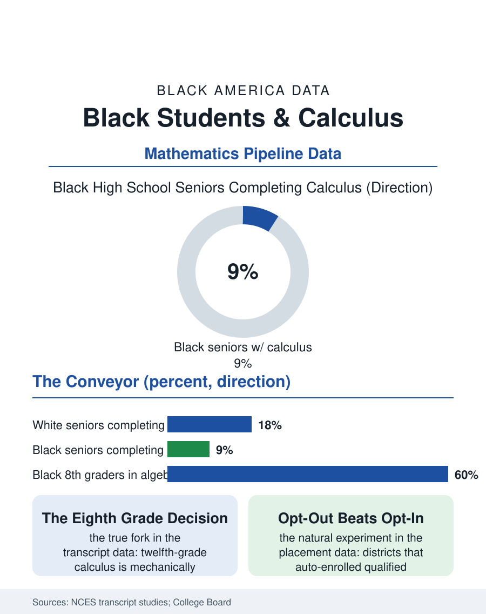

Black Education
The Last Gate: Black Students and Calculus
Calculus is decided in eighth grade, by placement systems that sort equally scored Black students downward, and the gate guards the STEM majors beyond it. The calculus file.

Calculus is the last gate in the school mathematics sequence, and the most consequential: it is the course selective colleges read as proof of rigor, the prerequisite the STEM majors assume, the line where the math pipeline's racial arithmetic becomes starkest. Black students complete calculus in high school at roughly half the rate of white students and a fraction of the rate of Asian American students in the federal transcript data. This article reads the calculus file, which is less about a course than about the decade of tracking decisions that decide who reaches it.
The Eighth Grade Fork
Calculus in twelfth grade is determined, mechanically, by algebra in eighth: the student who takes algebra early reaches geometry, algebra II, precalculus, and calculus on the standard conveyor; the student who does not cannot arrive without doubling up or summer compression, paths the data show taken rarely and at cost. The eighth grade algebra decision is therefore the file's true subject, and the middle school data expose it: Black students with identical prior test scores are placed into eighth grade algebra at lower rates than white students in the placement studies, a sorting produced by teacher recommendation systems, by parental advocacy gaps, and by the plain availability of the course in the schools Black students attend, since a meaningful share of middle schools, disproportionately high-poverty ones, do not offer the accelerated track at all. The districts that abolished the recommendation layer, placing every student who met the score threshold automatically with opt-out rather than opt-in, watched Black and Latino advanced math enrollment jump in the first cohort, the cleanest natural experiment in the file, and the counter-movement, districts removing eighth grade algebra for all in the name of equity, produced its own documented sorting, as affluent families purchased the acceleration privately and the gap moved off the books rather than closing.
The Ladder's Middle Rungs
Between the fork and the gate, the ladder's condition decides who survives it. Geometry and algebra II weed by teaching quality and by the support economy, the tutoring file's shadow system pricing the rescue of a struggling student in the sequence; a single failed semester ejects the student from the conveyor with no re-entry ramp in most schools' master schedules. The teacher supply file intersects with precision: advanced math teachers are the scarcest credential in the building, and the vacancy and out-of-field teaching data show Black students' advanced courses taught by the least experienced and least credentialed math faculty in the system, a distribution that would predict the outcome data by itself. The AP Calculus classroom, where it exists, adds the examination layer: Black students who reach the course take the AP exam at lower rates and pass at lower rates in the College Board's data, gaps the successful programs attack with the file's standard instruments, cohort enrollment so no student is the only one, summer bridge into the course, and the Saturday academy model the urban districts run. The alternative pathways deserve their paragraph: statistics has grown as a parallel summit with its own AP, an intellectually serious course whose data literacy arguably serves more citizens than calculus does, and the question of whether the calculus gate itself, its role in admissions and STEM prerequisites, is a measurement of readiness or a tradition with a sorting function, is now a live debate in the admissions literature, with several prominent universities publicly reweighting it.
What the Gate Guards
The reason the file matters beyond mathematics is the gate's downstream. Engineering, computer science, physics, and the pre-medical sequence assume calculus or teach it at a pace that functions as a filter, and the students who arrive without it, disproportionately Black, change majors in the first year in the attrition data at rates that masquerade as choices. The earnings file completes the circuit, since the calculus-gated majors anchor the top of the graduate income distribution. No one in the research literature argues the course is magic; the argument is that a system which rations the on-ramp by middle school recommendation, private purchase, and building availability has made a decision about the engineering workforce's composition while pretending to make none, and the decision is visible in every downstream count this atlas records. The calculus file closes with the eighth grade classroom where the fork actually happens, in October, in a counselor's scheduling decision most families never know occurred. The file's reform is correspondingly humble and total: publish the placement rule, automate the threshold, staff the ladder, and let the gate at the top measure the students who were actually allowed to climb. The climbers, on the evidence of every district that opened the conveyor, were there all along, in the proportions the population always said they would be.
More in Black Education
Black Educational Attainment: High School Parity, the College Gap
About 89 percent of Black adults hold a high school diploma and one in four holds a bachelor's degree or higher — the attainment ladder, the college completion gap, and the generational trend.
Historically Black Colleges and Universities: Enrollment and Degrees
More than 100 HBCUs enroll roughly 290,000 students and award about one in six Black bachelor's degrees — an outsized share from a small sector. The federal education data.
Black College Enrollment: 2.4 Million Students
About 2.4 million Black students are enrolled in American colleges — nearly two-thirds of them women. The NCES enrollment data by sector, level, and trend.
Source: National Center for Education Statistics high school transcript studies; College Board AP program data; district placement policy studies.